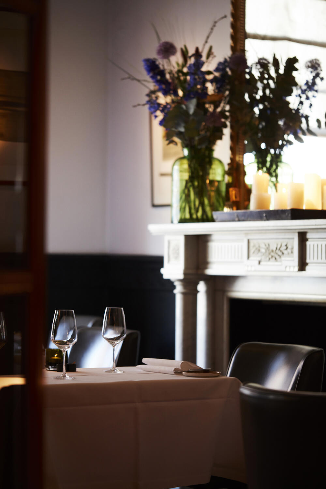
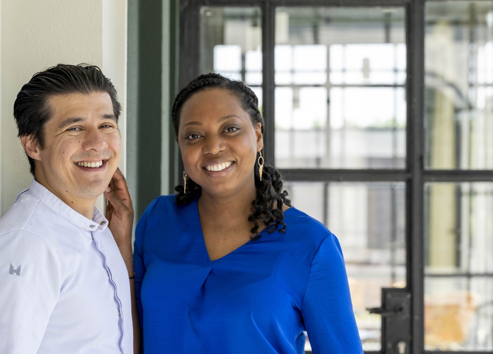
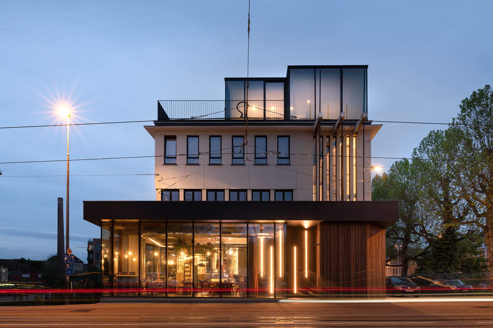
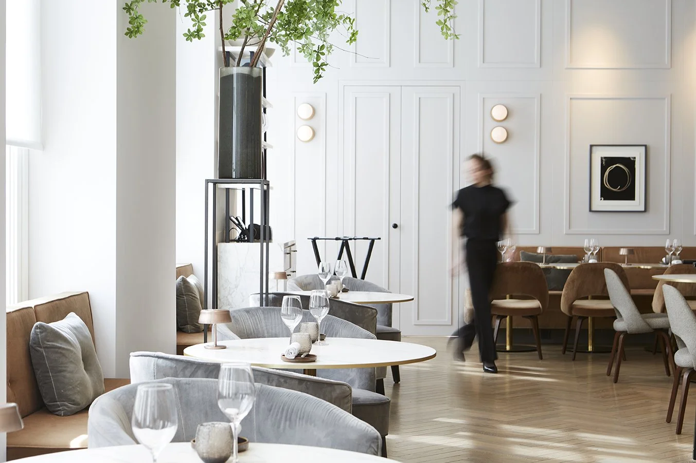

★ ★
Vrijmoed
17.5 / 20 · G&M 2026
The headline pick. Vrijmoed is the city's only two-star and tops the 2026 Gault&Millau Ten to Taste shortlist for Ghent at 17.5/20.[1][2]
Below that, three one-stars in city limits — OAK (16.5, the highest one-star score), Sensum (15.5, on the green outskirts), Publiek (15, the non-traditional star).[2] Two Bib Gourmands cover the value angle. For three stars within driving distance, the regional benchmark Hof van Cleve sits ~30 km southwest, now two stars under Floris Van Der Veken.[9] Souvenir's Brabantdam house closed in 2025; the casual successor is bistro Lubbi in Gentbrugge.[8]
Coverage: the Michelin Guide Belgium & Luxembourg 2025 (151 starred restaurants, 790 listings) is the current selection — a 2026 edition has not yet been published.[22] Gault&Millau Belux 2026 (23rd edition, 1,340+ addresses) has shipped.[20]
★ ★
Two Michelin stars
In Ghent · 1 entry
17.5/20
★ ★
Vrijmoed
Michaël Vrijmoed · Vegetable-forward fine dining
The city's only two-star. Chef trained eight years under Peter Goossens at Hof van Cleve before opening here in 2013. Tops the Gault&Millau "Ten to Taste Gent" 2026 list and is the obvious headline booking when you want the highest cooking inside the ring.[1][2]
VLAANDERENSTRAAT 22 · 9000 GENT

visit.gent.be
★
One Michelin star
In Ghent · 3 entries
16.5/20
★
OAK
Marcelo Ballardin · Italian-Brazilian roots, contemporary
A 24-seat 17C townhouse with a chef who often greets diners himself. The cooking pulls in North Sea clams, manioc and Asian notes against contemporary technique. Highest Gault&Millau score of any one-star inside city limits.[3][23][2]
BURGSTRAAT 16 · 9000 GENT · 24 SEATS
OAK
— logo, 17C townhouse —
15.5/20
★
Sensum
Maurice de Jaeger · Castle-set, Asian-tinged sauces
Awarded its first star in 2023 — Ghent's sixth at the time. Set in a small castle on the edge of the green ring canal in Sint-Denijs-Westrem (not central). Regional Belgian classics with sauces that lean Asian. Sequel to Vinum & Sensum in Knokke; run by Dutch couple De Jaeger and Deborah Hellburg.[5][6][27]
KORTRIJKSESTEENWEG 1026 · 9051 SINT-DENIJS-WESTREM

bouverne.be · K. Vlegels
15/20
★
Publiek
Olly Ceulenaere · The non-traditional star
Loft-bistro vibe, "rock 'n' roll" service, and a kitchen that consciously avoids truffles and caviar in favour of little-known vegetables. Of the Flemish Foodies trio, this is the one that earned the star while staying loose.[4][24]
HAM 39 · 9000 GENT
PUBLIEK
— veg-forward, Ham 39 —
★ ★
Regional benchmark · ~30 km from Ghent
Drive-out · 1 entry
—
★ ★
WAS ★ ★ ★
Hof van Cleve
Floris Van Der Veken · Flagship Belgian table, 2024–
Held three Michelin stars from 2005 to 2023 under Peter Goossens — Belgium's flagship table for nearly two decades. Goossens handed over on 1 January 2024; Michelin reset the listing to two stars under Van Der Veken in the 2024 guide. Still the closest top-tier benchmark to Ghent and the kitchen most starred chefs in the area trained at or compete with.[25][10][9][26]
KRUISEM · EAST FLANDERS · ≈30 KM SW OF GHENT
HOF
VAN CLEVE
— flagship, 2005–2023 = 3★ —
Souvenir Closed at Brabantdam · 2025
Held one Michelin star and a Michelin Green Star for sustainable gastronomy under Vilhjalmur Sigurdarson. G&M 2026 still lists it at 15.5/20.[7][2]
After eleven years the team closed the Brabantdam house in 2025 — they now run bistro Lubbi (former hospital, Kliniekstraat, Gentbrugge) plus catering arm Le Petit Garçon. If you wanted the Souvenir experience, it isn't available; the casual successor is.[8]
BIB
Bib Gourmand · good food, fair price
2 entries
BIB
GOURMAND
Bar Bask
Basque-inspired Asador grill · former gas station
Wood-fire counter cooking — a refrigerated case of seafood, plus turbot, lobster, txuleta steak, free-range guinea fowl. Refined fire-cooking at Bib prices, with a view of the Scheldt where the pumps used to be.[11][31]
FORMER GAS STATION · NEAR THE SCHELDT · GHENT

visit.gent.be
BIB
GOURMAND
Boris & Maurice
French-leaning bistro · reservation only
Two ex-Bodo cooks running a small neighbourhood bistro by reservation only, with a weekly lunch and a monthly seasonal menu. Classic mother sauces — Mornay, Archiduc — done with care.[12]
ANTWERPSESTEENWEG 329 · 9040 SINT-AMANDSBERG
BORIS &
MAURICE
— reservation only —
▣
Michelin Selected (Plate) · strong G&M scores
The next tier worth booking · 6 entries
Listed in the Michelin guide without a star or Bib, but holding meaningful Gault&Millau scores.
15/20
SELECTED
Karel de Stoute
Thomas De Muynck · Modern, subtle Asian touch
Patershol veteran, recently renovated, 15+ years in the neighbourhood. Modern, creative cooking with a subtle Asian twang.[15][29]
VROUWEBROERSSTRAAT 2 · PATERSHOL · 9000 GENT
KAREL DE STOUTE
— Patershol —
15/20
SELECTED
Commotie
Thomas Gellynck · Open fire, fermentation, foraging
Sint-Amandsberg. Japanese-minimal interior with a kitchen that revolves around open fire, honest seasonal ingredients, foraging, fermentation, and produce from its own garden. Gault&Millau classifies it as "Creative".[16][30]
SINT-AMANDSBERG · 9040 GENT
COMMOTIE
— open fire, garden —
14.5/20
G&M ★ AWARD
Elders
Tom Pauweleyn · Gastro-Bistro of the Year 2025
Hip, open kitchen, brunch and terrace at Edmond Van Beverenplein. Score rose from 14 to 14.5 the year of the Gault&Millau Gastro-Bistro of the Year award.[17]
EDMOND VAN BEVERENPLEIN 16 · 9000 GENT
ELDERS
— G&M Gastro-Bistro 2025 —
14.5/20
SELECTED
Roots
Kim Devisschere · Bistronomic tasting menus, organic
Patershol. No-holds-barred cooking with a commitment to organic, locally sourced ingredients. Lunch from €35, dinner from €65 — democratic gourmet.[14]
VROUWEBROERSSTRAAT 5 · PATERSHOL · 9000 GENT
ROOTS
— organic, €35 lunch —
14.5/20
G&M ONLY
Rizoom
Yves Kerckhoffs · Umami, fermentation, open fire
Intimate room with an emphasis on umami, fermentation and open-fire cooking. Sits on the Gault&Millau "Ten to Taste Gent" 2026 list.[2]
NIEUWEWANDELING 62 · 9000 GENT
—
NEW CONCEPT
LOF
concept by Paul de Groote (NL, ex-Inter Scaldes)
Inside Pillows Hotel Reylof, in baron Olivier de Reylof's former townhouse. New gastronomic concept tied to a Dutch alumnus of three-star Inter Scaldes (twenty years under Jannis Brevet) — too new to be scored, but on the radar.[13][28]
PILLOWS HOTEL REYLOF · GHENT

lofrestaurant.com
❦
Gault&Millau 2026 awards · relevant to Ghent
3 awards
H!P · Flanders Hotspot
Martino
Ghent · since 1955
Snack bar going since 1955 — natural wines, cocktails, sandwiches/burgers/pasta. Chosen as Flanders' Hotspot of the Year 2026.[21]
Dessert of the Year
Le Julien
Aalter-Lotenhulle · ≈25 km W
Paris-Brest with hazelnut praline + vanilla ice cream by Davy Devlieghere — tribute to Goossens, Geunes, Horseele. 16/20, three chef's hats.[18][19]
Chef of the Year · National
Karen Torosyan
Bozar · Brussels (not Ghent)
Recognised for "obsessive pursuit of perfection" on classical dishes — useful context: this is who the Ghent two-star benchmark is now measured against nationally.[20]
≡
Master sheet · Gault&Millau Ten to Taste Gent 2026
Ranked 1–10
A single ranked list — useful when Michelin's distinctions cut sideways across what Gault&Millau's local panel actually rates highest.[2]
| # |
Restaurant |
G&M 2026 |
Michelin |
Locale |
| 1 | Vrijmoed | 17.5 | ★ ★ | Centre |
| 2 | OAK | 16.5 | ★ | Centre · Burgstraat |
| 3 | Sensum | 15.5 | ★ | Sint-Denijs-Westrem |
| 3 | Souvenir | 15.5 | ⚠ closed 2025 | was Brabantdam |
| 5 | Commotie | 15 | ▣ Selected | Sint-Amandsberg |
| 5 | Karel de Stoute | 15 | ▣ Selected | Patershol |
| 5 | Publiek | 15 | ★ | Ham 39 |
| 8 | Elders | 14.5 | G&M Gastro-Bistro 2025 | Edmond Van Beverenplein |
| 8 | Roots | 14.5 | ▣ Selected | Patershol |
| 8 | Rizoom | 14.5 | — | Nieuwewandeling |